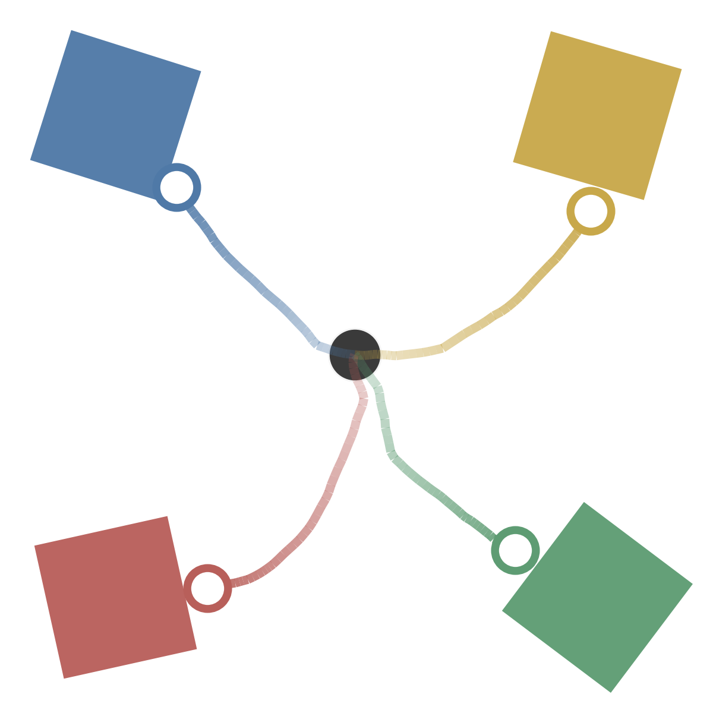

1
Navigation

The demonstration data includes movements to any of the four regions.
Liveness Constraints
Complex Instructions
Liveness Constraints
LTL:
F(b ∧ X F(y ∧ X F(g
∧ X F(r ∧ X F b))))
"Touch the blue region, then the yellow, green, and red regions, then blue again."
Complex Instructions
LTL:
G avoid_region ∧ F((F r
∧ F b)∧ F[F(y ∧ F(b ∧ F(g
∧ F y)))∨ F(g ∧ F(b ∧ F(y
∧ F g)))])
"Visit r and b, follow y→b→g→y or g→b→y→g, and always avoid the marked regions."